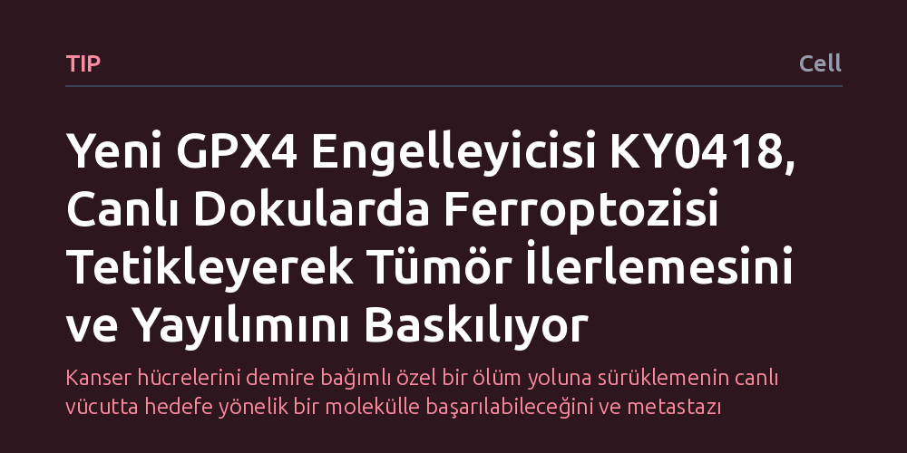

TIP · Cell · 2026-10-25
Araştırmacılar, canlı organizmalarda ferroptozis hücresel ölümünü güvenle tetikleyebilmek için biyoyararlanımı yüksek yeni bir kimyasal aradı. Geliştirilen KY0418 adlı GPX4 engelleyicisi, doku metabolizmasını yeniden düzenleyerek tümör büyümesini ve metastatik yayılımı duruma bağlı biçimde baskıladı.
Kanser hücrelerini demire bağımlı özel bir ölüm yoluna sürüklemenin canlı vücutta hedefe yönelik bir molekülle başarılabileceğini ve metastazı frenleyebileceğini gösteriyor.

Geleneksel kanser tedavilerinin en büyük açmazlarından biri, hücrelerin zamanla mevcut ilaçlara direnç kazanmasıdır. Vücudumuzda hücreler genellikle apoptozis adı verilen klasik bir programlı ölüm mekanizmasıyla ortadan kaldırılır; fakat pek çok saldırgan tümör bu yolağı devre dışı bırakmayı öğrenir. Bilim insanları son yıllarda, demir elementine ve yağ asidi oksitlenmesine dayanan bütünüyle farklı bir hücre ölümü biçimi olan ferroptozisi keşfetti. Kanser hücreleri hızla çoğalırken çok fazla metabolik atık ve yağ biriktirdiği için, ferroptozise karşı normal hücrelerden çok daha hassas bir yapı sergiler.
Ne var ki ferroptozisi laboratuvardaki bir hücre kültüründe tetiklemek kolay olsa da bunu yaşayan bir canlının dokularında seçici ve güvenli biçimde başarmak uzun süredir aşılamayan bir engeldi. Hücreyi bu ölümden koruyan kalkan niteliğindeki GPX4 enzimini durduracak moleküller biliniyordu; ancak bu moleküller canlı vücutta ya hızla parçalanıyor ya da hedeflenen dokuya ulaşamadan etkisiz kalıyordu. Ortadaki temel soru şuydu: Canlı dokularda doğrudan işleyen, dolaşımda bozulmayan ve tümörleri durduran bir ferroptozis tetikleyicisi üretilebilir mi?
Araştırmacılar bu engeli aşabilmek için biyoyararlanımı yüksek, yani vücuda verildiğinde dokulara bozulmadan ve aktif halde nüfuz edebilen yeni bir kimyasal tasarlamaya odaklandı. Bu çabanın sonucunda KY0418 adı verilen özgün bir GPX4 enzim engelleyicisi sentezlendi. Geliştirilen bu molekül, hücrenin antioksidan savunma hattının merkezinde yer alan GPX4 proteinine doğrudan bağlanarak onun hücre zarındaki oksitlenmiş yağları temizleme işlevini kilitliyor.
Çalışma kapsamında bu yeni bileşik, tümör taşıyan canlı modellerine sistemik yoldan uygulandı. Araştırma ekibi sadece birincil tümörün küçülüp küçülmediğine bakmakla yetinmedi; aynı zamanda ilacın sağlıklı ve hastalıklı dokularda tetiklediği metabolik dönüşümleri, hücresel stres yanıtlarını ve kanser hücrelerinin başka organlara yayılma eğilimini deneysel olarak adım adım izledi.
Elde edilen sonuçlar, KY0418 molekülünün canlı vücutta ferroptozisi başarıyla ve hedefe yönelik biçimde tetiklediğini gösterdi. Bileşik sistemik olarak uygulandığında dokularda kapsamlı bir metabolik yeniden şekillenme süreci başlattı. GPX4 enziminin bloke edilmesiyle birlikte kanserli dokularda demir bağımlı lipid hasarı hızla birikti ve hedeflenen hücreler geri dönüşü olmayan bir ölüm sürecine sürüklendi.
Çalışmanın en dikkat çekici bulgusu ise tümör ilerlemesinin ve özellikle metastatik yayılımın baskılanması oldu. Kanser tedavisinde hastaların yaşamını asıl tehdit eden unsur, birincil tümörden kopan hücrelerin kan ve lenf yoluyla uzak organlara sıçramasıdır. KY0418 uygulaması, kanserin bu saldırgan yayılma yeteneğini duruma ve doku ortamına bağlı olarak belirgin biçimde sınırlandırdı.
Bu çalışma, ferroptozisin canlı bir organizmada sistemik olarak harekete geçirilebileceğini kanıtlasa da sonuçlar önemli bir gerçeği hatırlatıyor: İlacın tümör baskılayıcı etkisi her koşulda aynı düzeyde gerçekleşmiyor, dokunun yerel metabolik ortamına göre farklılık gösteriyor. Farklı organların yağ asidi profilleri ve antioksidan kapasiteleri, ferroptozis tetikleyicisine verilen yanıtın gücünü doğrudan etkiliyor.
Dolayısıyla bu gelişmeyi tek başına tüm kanserleri yok edecek bir mucize gibi değil, metastaz riskini hedef alan hassas ve yeni bir biyolojik araç olarak değerlendirmek gerekiyor. Canlı dokularda ferroptozisi tetikleyebilen KY0418 gibi moleküller, gelecekte özellikle klasik tedavilere direnç geliştirmiş zorlu kanser türlerine karşı geliştirilecek kombine protokollerin temelini oluşturabilir.